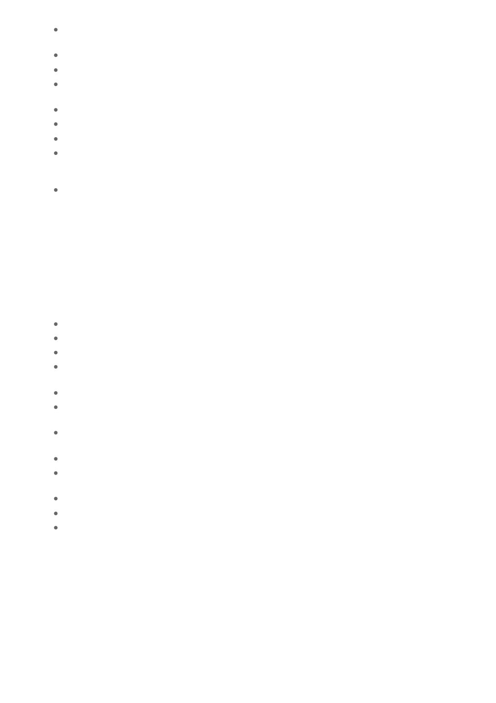

Replace remaining four frames back into hive, being careful not to break up the swarm mass
as they may re-swarm.
Avoid crushing bees, as this may result in the loss of the queen!
Replace lid on the hive.
Leave hive / box in place under where the swarm was located, for scout and other flight bees
from the swarm to return to.
After dark all bees should be in the hive / box. Close up the hive / box and remove.
Keep swarm separate from other hives until sure they are not diseased.
If the swarm is located on a fencepost, wall of a house or similar, you can collect the swarm by:
Undertaking the same process described above, except commence by placing the box
underneath the swarm and either sweeping or scooping the bees up and placing them into
the hive / box.
Or: Place the hive / box underneath the swarm and very gently use your smoker to direct them
into the hive / box provided.
If a swarm re-emerges after being boxed up, place a queen excluder between the hive box and the
bottom board to prevent the queen leaving, thus forestalling any further swarming. You can remove
the excluder as soon as it is apparent the queen is laying.
Using a cardboard box to capture a swarm.
Bees will not discriminate against this option, provided the box is clean and does not contain
unpleasant odors.
Use the process previously described to get the swarm into the hive.
The bees will fall into and cling to the bottom and sides of the box.
Close three of the four parts of the lid of the box.
Slowly turn it over and place it on the ground, directly underneath where the swarm was.
Prop the open end of the box approx. 2cm off the ground with a stick or match box, to allow
remaining bees from the swarm who are still out flying to continue to enter.
After dark close the remaining part of the lid and remove to chosen location.
Later: Transfer swarm into a hive containing four frames of foundation and four drawn out
frames of comb if possible.
To do this, remove lid from hive; remove four frames; invert cardboard box over hive and allow
bees to make own way down onto frames.
Replace remaining four frames and hive lid.
Alternatively - Place a “ramp” made from cardboard, sheet or similar in front of the hive
entrance; upend the cardboard box onto this and allow the bees to walk into the hive.
The bees can be very gently encouraged to do this by using a smoker.
There are many variations to the ways in which swarms can be captured.
Most of all, be calm, adaptable and reassuring to those around you!!!
Reference - Refer to Australian Beekeeping Manual Pages 124 - 128